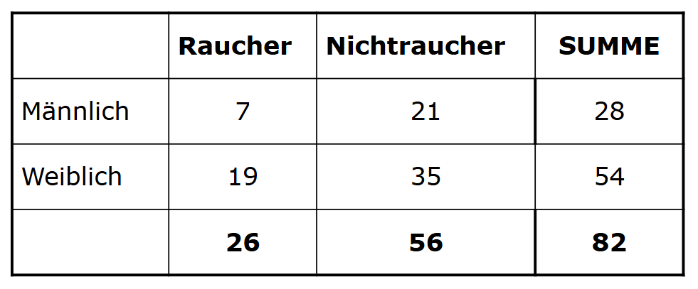
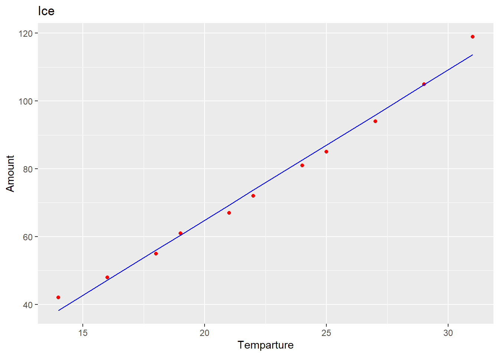
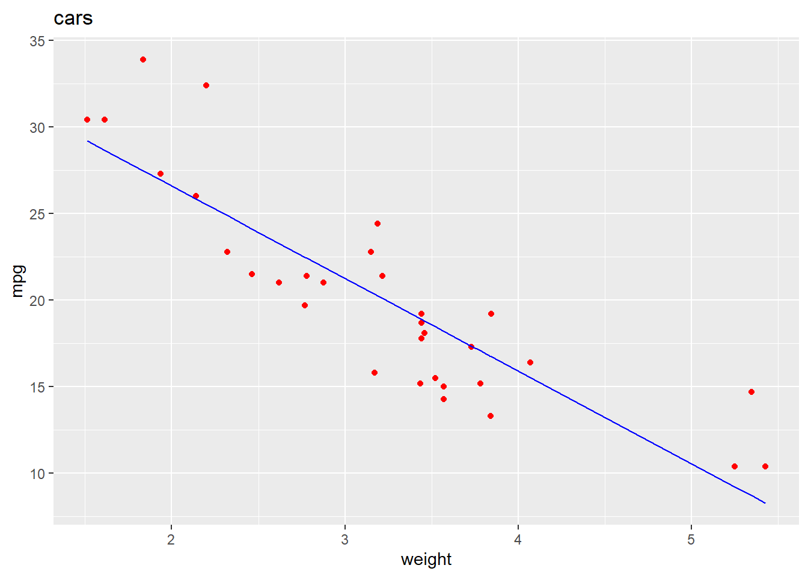
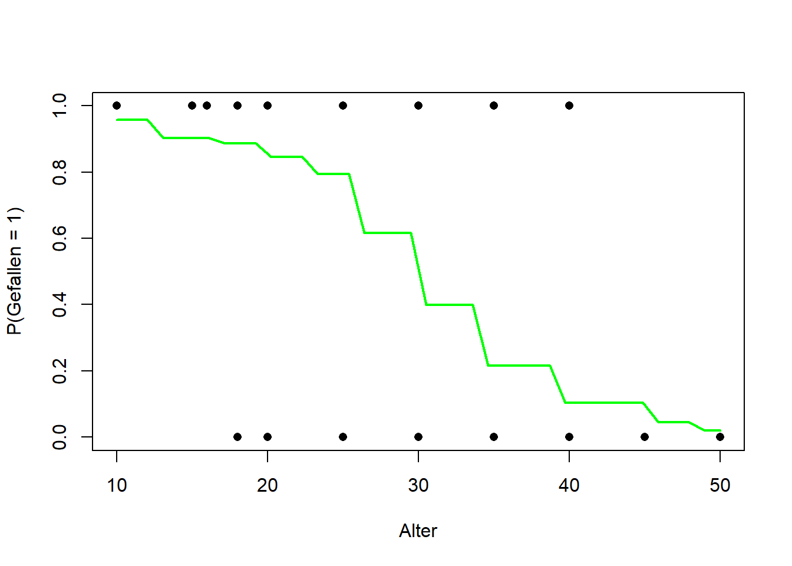

rm(list=ls())Bivariate Statistik
Bivariate Statistik
Correlations
Ex. 1
Gibt es einen Zusammenhang zwischen den Energieeffizienzklassen und dem Gerätepreis?
Ja, umso schlechter die Energie-Klasse, umso kleiner der Preis.
Berechnen Sie den geeigneten Korrelationskoeffizienten?
Kendall, da kleiner Datensatz.
E <- factor(c("A","C","C","D","G","E","E","F","A","B","B","F","C","G"))
P <- c(56,45,51,47,23,26,36,37,53,50,54,25,40,34)
cor(P, as.numeric(E), method = "kendall")[1] -0.7709302Ex. 2
Both are 0.8! Yippie!
x <- c(4, 7, 6, 5, 8)
y <- c(5, 6, 7, 4, 8)
manual <- 1 - ( (6 * sum((y - x)^2)) / (length(x) * (length(x)^2 - 1)))
manual[1] 0.8cor(x, y, method="spearman")[1] 0.8Ex. 3

library(vcd)Loading required package: gridtable <- matrix(c(c(7, 19), c(21, 35)), nrow = 2, ncol = 2, dimnames = list(c("male", "female"), c("smoker", "non-smoker")))
assocstats(table) X^2 df P(> X^2)
Likelihood Ratio 0.90355 1 0.34183
Pearson 0.88337 1 0.34728
Phi-Coefficient : 0.104
Contingency Coeff.: 0.103
Cramer's V : 0.104 Linear Regression
Ex. 1
library(ggplot2)
library(caTools)
ice <- data.frame(temperatur = c(14,16,18,19,21,22,24,25,27,29,31), anzahl = c(42,48,55,61,67,72,81,85,94,105,119))
lm_r = lm(formula = ice$anzahl ~ ice$temperatur)
summary(lm_r)
Call:
lm(formula = ice$anzahl ~ ice$temperatur)
Residuals:
Min 1Q Median 3Q Max
-2.3154 -1.8392 -1.0093 0.7084 5.3310
Coefficients:
Estimate Std. Error t value Pr(>|t|)
(Intercept) -23.8272 3.5631 -6.687 8.98e-05 ***
ice$temperatur 4.4354 0.1552 28.569 3.84e-10 ***
---
Signif. codes: 0 '***' 0.001 '**' 0.01 '*' 0.05 '.' 0.1 ' ' 1
Residual standard error: 2.655 on 9 degrees of freedom
Multiple R-squared: 0.9891, Adjusted R-squared: 0.9879
F-statistic: 816.2 on 1 and 9 DF, p-value: 3.84e-10coefs <- coef(lm_r)
coefs (Intercept) ice$temperatur
-23.827222 4.435364 Gleichung: y = 4.435364 x - 23.827222 R2 = 0.9879
func <- function(x)
{
return (4.435364 * x + -23.8272222)
}
func(23)[1] 78.18615Erwartet: 78.1
ggplot() +
geom_point(aes(x = ice$temperatur, y = ice$anzahl), colour = 'red') +
geom_line(aes(x = ice$temperatur, y = predict(lm_r, newdata = ice)), colour = 'blue') +
ggtitle('Ice') +
xlab('Temparture') +
ylab('Amount')
Ex. 2
data("mtcars")
head(mtcars) mpg cyl disp hp drat wt qsec vs am gear carb
Mazda RX4 21.0 6 160 110 3.90 2.620 16.46 0 1 4 4
Mazda RX4 Wag 21.0 6 160 110 3.90 2.875 17.02 0 1 4 4
Datsun 710 22.8 4 108 93 3.85 2.320 18.61 1 1 4 1
Hornet 4 Drive 21.4 6 258 110 3.08 3.215 19.44 1 0 3 1
Hornet Sportabout 18.7 8 360 175 3.15 3.440 17.02 0 0 3 2
Valiant 18.1 6 225 105 2.76 3.460 20.22 1 0 3 1lm_r = lm(formula = mtcars$mpg ~ mtcars$wt, data = ice)
summary(lm_r)
Call:
lm(formula = mtcars$mpg ~ mtcars$wt, data = ice)
Residuals:
Min 1Q Median 3Q Max
-4.5432 -2.3647 -0.1252 1.4096 6.8727
Coefficients:
Estimate Std. Error t value Pr(>|t|)
(Intercept) 37.2851 1.8776 19.858 < 2e-16 ***
mtcars$wt -5.3445 0.5591 -9.559 1.29e-10 ***
---
Signif. codes: 0 '***' 0.001 '**' 0.01 '*' 0.05 '.' 0.1 ' ' 1
Residual standard error: 3.046 on 30 degrees of freedom
Multiple R-squared: 0.7528, Adjusted R-squared: 0.7446
F-statistic: 91.38 on 1 and 30 DF, p-value: 1.294e-10ggplot() +
geom_point(aes(x = mtcars$wt, y = mtcars$mpg), colour = 'red') +
geom_line(aes(x = mtcars$wt, y = predict(lm_r, newdata = mtcars)), colour = 'blue') +
ggtitle('cars') +
xlab('weight') +
ylab('mpg')
Ex. 3
Cholesterin
chol <- readxl::read_xlsx("../../Data/Cholesterin.xlsx")New names:
• `` -> `...3`
• `` -> `...4`
• `` -> `...6`chol <- chol[c(1, 2)]
chol <- na.omit(chol)
head(chol)# A tibble: 6 × 2
`HDL [mg/dl]` `Systole [mm Hg]`
<dbl> <dbl>
1 22 160
2 20 120
3 20 120
4 23 160
5 24 135
6 28 160summary(chol) HDL [mg/dl] Systole [mm Hg]
Min. : 20.00 Min. :110.0
1st Qu.: 29.00 1st Qu.:125.0
Median : 44.00 Median :145.0
Mean : 47.94 Mean :146.1
3rd Qu.: 60.00 3rd Qu.:162.5
Max. :125.00 Max. :185.0 lm_r <- lm(chol$`HDL [mg/dl]` ~ chol$`Systole [mm Hg]`)
summary(lm_r)
Call:
lm(formula = chol$`HDL [mg/dl]` ~ chol$`Systole [mm Hg]`)
Residuals:
Min 1Q Median 3Q Max
-37.502 -14.548 -4.391 10.505 69.326
Coefficients:
Estimate Std. Error t value Pr(>|t|)
(Intercept) 101.3796 18.6894 5.424 8.09e-07 ***
chol$`Systole [mm Hg]` -0.3656 0.1266 -2.888 0.00517 **
---
Signif. codes: 0 '***' 0.001 '**' 0.01 '*' 0.05 '.' 0.1 ' ' 1
Residual standard error: 22.37 on 69 degrees of freedom
Multiple R-squared: 0.1079, Adjusted R-squared: 0.09494
F-statistic: 8.343 on 1 and 69 DF, p-value: 0.005168Baby
baby <- readxl::read_xlsx("../../Data/Babydaten1.xlsx")
baby <- na.omit(baby)
head(baby)# A tibble: 6 × 14
ID Geburtsdatum Geschlecht kg g cm Blutgruppe Apgar
<dbl> <dttm> <chr> <dbl> <dbl> <dbl> <chr> <dbl>
1 1086 2006-07-10 07:57:00 f 2.44 2440 49 A 5
2 1088 2006-10-26 23:46:00 f 2.54 2540 47 0 9
3 1081 2007-11-07 11:23:00 f 2.58 2580 47 0 9
4 1071 2007-04-10 05:45:00 f 2.84 2840 51 0 8
5 1083 2008-01-05 02:22:00 f 3 3000 50 0 10
6 1089 2006-12-01 16:12:00 f 3.27 3270 51 0 9
# ℹ 6 more variables: Terminabweichung <dbl>, Sectio <chr>, CTG <dbl>,
# PKU <chr>, Koerpertemperatur <dbl>, KH_Aufenthalt <dbl>summary(baby) ID Geburtsdatum Geschlecht kg
Min. :1059 Min. :2006-07-04 07:19:00 Length :30 Min. :2.020
1st Qu.:1068 1st Qu.:2006-12-19 02:37:45 N.unique : 2 1st Qu.:2.810
Median :1077 Median :2007-03-29 01:51:00 N.blank : 0 Median :3.270
Mean :1076 Mean :2007-04-09 04:14:26 Min.nchar: 1 Mean :3.113
3rd Qu.:1086 3rd Qu.:2007-04-13 12:50:00 Max.nchar: 1 3rd Qu.:3.390
Max. :1093 Max. :2008-01-05 02:22:00 Max. :4.340
g cm Blutgruppe Apgar Terminabweichung
Min. :2020 Min. :44.00 Length :30 Min. : 4.0 Min. :-4.000
1st Qu.:2810 1st Qu.:48.00 N.unique : 4 1st Qu.: 8.0 1st Qu.:-1.750
Median :3270 Median :49.50 N.blank : 0 Median : 9.0 Median : 0.000
Mean :3113 Mean :49.63 Min.nchar: 1 Mean : 8.5 Mean : 1.733
3rd Qu.:3390 3rd Qu.:51.00 Max.nchar: 2 3rd Qu.:10.0 3rd Qu.: 3.000
Max. :4340 Max. :54.00 Max. :10.0 Max. :21.000
Sectio CTG PKU Koerpertemperatur
Length :30 Min. : 5.000 Length :30 Min. :36.7
N.unique : 2 1st Qu.: 8.000 N.unique : 2 1st Qu.:37.0
N.blank : 0 Median : 9.000 N.blank : 0 Median :37.2
Min.nchar: 2 Mean : 8.633 Min.nchar: 3 Mean :37.2
Max.nchar: 4 3rd Qu.:10.000 Max.nchar: 3 3rd Qu.:37.4
Max. :10.000 Max. :37.7
KH_Aufenthalt
Min. : 0.000
1st Qu.: 3.000
Median : 4.000
Mean : 5.767
3rd Qu.: 5.000
Max. :60.000 a <- (as.numeric(factor(baby$Sectio)) - 1 ) * -1 + 1 # makes 0 no sectio and 1 sectio to make the correlation make more sense
cor(baby$KH_Aufenthalt, a, method = "kendall")[1] 0.3764012lm_r <- lm(formula = baby$KH_Aufenthalt ~ baby$Sectio)
summary(lm_r)
Call:
lm(formula = baby$KH_Aufenthalt ~ baby$Sectio)
Residuals:
Min 1Q Median 3Q Max
-5.708 -2.708 -1.854 -0.708 54.292
Coefficients:
Estimate Std. Error t value Pr(>|t|)
(Intercept) 6.0000 4.3294 1.386 0.177
baby$Sectionein -0.2917 4.8404 -0.060 0.952
Residual standard error: 10.6 on 28 degrees of freedom
Multiple R-squared: 0.0001297, Adjusted R-squared: -0.03558
F-statistic: 0.003631 on 1 and 28 DF, p-value: 0.9524Logistic Regression
film_data <- read.csv2("../../Data/film.csv")
head(film_data) Alter Gefallen
1 10 1
2 10 1
3 10 1
4 15 1
5 15 1
6 15 1logistic_model <- glm(film_data$Gefallen~film_data$Alter, data=film_data, family="binomial")
summary(logistic_model)
Call:
glm(formula = film_data$Gefallen ~ film_data$Alter, family = "binomial",
data = film_data)
Coefficients:
Estimate Std. Error z value Pr(>|z|)
(Intercept) 4.86539 1.43437 3.392 0.000694 ***
film_data$Alter -0.17574 0.04996 -3.517 0.000436 ***
---
Signif. codes: 0 '***' 0.001 '**' 0.01 '*' 0.05 '.' 0.1 ' ' 1
(Dispersion parameter for binomial family taken to be 1)
Null deviance: 55.452 on 39 degrees of freedom
Residual deviance: 32.775 on 38 degrees of freedom
AIC: 36.775
Number of Fisher Scoring iterations: 5coef(logistic_model) (Intercept) film_data$Alter
4.8653915 -0.1757448 exp(coef(logistic_model)) (Intercept) film_data$Alter
129.7217173 0.8388321 predicted_data <- data.frame(
Alter = seq(min(film_data$Alter), max(film_data$Alter), length.out = 40)
)
predicted_data$Gefallen <- predict(logistic_model, newdata = predicted_data, type = "response")
plot(Gefallen ~ film_data$Alter, data = film_data,
xlab = "Alter", ylab = "P(Gefallen = 1)",
ylim = c(0, 1), pch = 16)
lines(Gefallen ~ Alter, data = predicted_data, lwd = 2, col = "green")